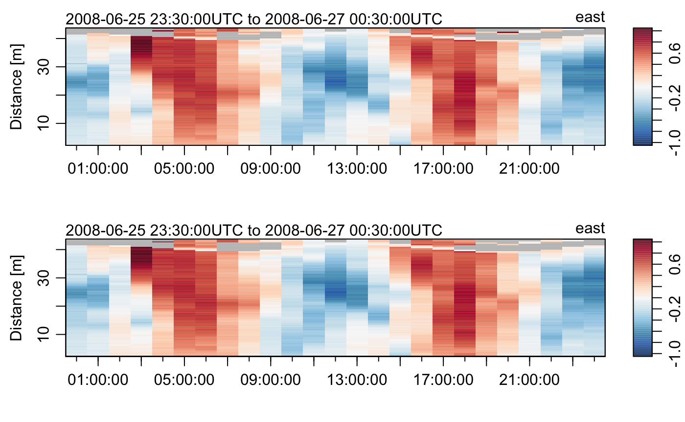

5. Dealing with data-quality flags
Dan Kelley (https://orcid.org/0000-0001-7808-5911)
2020-05-31
Source:vignettes/flags.Rmd
flags.RmdAbstract. This vignette explains the basics of working with data-quality flags in oce. As in the vignette about working with adp data, the material is organized to reflect typical workflow. See the main oce vignette for general information about oce. The sample code provided here relies on the oce package, loaded as follows.
library(oce) #> Loading required package: gsw #> Loading required package: testthat
Overview
Flag context
It is common for oceanographers to link data with “flags” that indicate data quality. This scheme permits retention of the original measurements, on the assumption that they still hold some value, while at the same time providing an indication of problems. Using flags is superior to simply deleting suspicious data, or to changing recorded values to NA, because it lets analysts try to recover from the difficulty, perhaps by switching to another sensor, by reducing the weights of individual data during averaging operations, etc.
Another advantage of using flags over simply discarding bad data is that flags can be nuanced; e.g. distinguishing between unchecked data, data thought to be good, data that are suspected of being bad, data that are sure to be faulty, etc.
Flags are sometimes determined by automated analysis of data (e.g. range checks on individual fields, departures from gravitational stability, loops in TS diagrams, etc.). It is common for an analyst to use such tests as a starting point for further processing that incorporates the study of graphical displays, comparison with related measurements, etc.
Flag conventions
A frustrating aspect of oceanographic analysis is that different data archiving agencies employ different systems for flags. For example, the World Hydrographic Programme designates good bottle/CTD data with a flag value of 2, whereas the World Ocean Database uses 0 for good data.
Analysts must be aware of the scheme used for a particular dataset. It is also good to be on the lookout for particular values in data, because oceanographers sometimes set suspicious values to non-physical values that are easy to recognize, e.g. -999, -99.99, or similar, and sometimes these coded values may contradict formal flags, when both are present.
Flag storage
Data-quality flags are stored in the flags entry in the metadata slot of oce objects. This entry is a list, containing items with names matching the to names of data elements that are stored in the data slot. Oce functions assume that the flags and the data are in one-to-one correspondence, so the flags must have the same dimensionality as the data.
Flag inspection
It is possible to inspect flags using e.g. to see flags corresponding to , but a simpler notation is also provided, with e.g. returning the flags for the salinity data. (Note the suffix in this notation; without that, the salinity data would be returned.)
Flag creation
Although it is possible to set and alter flags directly, it is much better to use oce functions to do so, because (a) they will not create dimensionality or name conflicts with the data and (b) they record their actions in the object’s processingLog slot.
Creating flags is usually a three-step process:
Use
initializeFlagSchemeto establish a mapping between flag numerical value and flag meaning. This step is not strictly necessary, but it is useful because it stores the flag scheme within the object’smetadataslot, as a form of documentation. This step may be done only once for a given object, because changing a flag scheme in the middle of processing invites errors.Use
initializeFlagsto set up space for flag storage, and to initialize values (normally to a code indicating either unchecked data or acceptable data). This may be done only once per data item.Use
setFlagsto assign individual flag values to individual data. This may be used repeatedly for a given object. Indeed, as illustrated later in this document, it is common to call this function within a loop that displays a graph, invites the user to click on points to be flagged, then displays the new graph, etc.
Note that some reading operations set up flags automatically, if the data file already holds flags. For example, read.argo can do this, because Argo data have a fixed flag scheme, and archived Argo data often come with flag values already inserted.
Handling flags
As with setting flags, analysts are free to extract flag values and use them for any purpose that comes to mind. Simple cases may be handled with the oce function named handleFlags, which is set up to respond to particular flag values with particular actions. It has reasonable defaults for different data types, and it can detect a flag scheme that has been set up with setFlagScheme. The default action of setting the data that have been flagged as bad to the NA value may suffice in many plotting or analysis situations.
Sample working procedure
CTD range checks
(This section is an expansion of Example 1 shown by ?"setFlags,ctd-method".)
The oce package provides a dataset
that contains some clearly anomalous values that are revealed clearly in a summary plot (Figure 1):
plot(ctdRaw)
Figure 1. Summary plot for raw CTD profile.
As Figure 1 shows, ctdTrim removes most of the anomalous data by examining the variation of the pressure signal over time, it may also be of interest to see how well simple range checks can perform in cleaning up the data. Salinity certainly cannot be negative, but in an oceanographic setting it is common to relax that criterion somewhat, perhaps insisting that Absolute Salinity \(S_A\) exceed \(25\)g/kg. This value might work in other situations as well, and the same could be said of an upper limit of \(40\)g/kg. Similarly, it might make sense to bound temperature between, say, \(-2^\circ\)C and \(40^\circ\)C for application throughout much of the world ocean.
These criteria can be supplied to setFlags in various ways, but the simplest is to create logical vectors, e.g.
badS <- with(ctdRaw[["data"]], salinity < 25 | 40 < salinity) badT <- with(ctdRaw[["data"]], temperature < -2 | 40 < temperature)
In the above, with has been used to avoid inserting salinity and temperature in the namespace, but it would also be common to use e.g.
S <- ctdRaw[["salinity"]] T <- ctdRaw[["temperature"]] bad <- (S < 25 | 40 < S) || (T < -2 | 40 < T)
Since the goal here is to illustrate setting multiple flags, the badS and badT values will be used. The first step is to copy the original data, so that the flag operations will not alter ctdRaw:
qc <- ctdRaw
Work flow is best documented if a flag scheme is established, and the “WHP CTD exchange” scheme is a reasonable choice; using
qc <- initializeFlagScheme(qc, "WHP CTD")
stores a note on the scheme in the metadata slot of qc. Importantly, however, it does not store any flag values. The next step is to initialize flag values. For example, to set up flag storage for salinity and temperature, use e.g.
qc <- initializeFlags(qc, "salinity", 2) qc <- initializeFlags(qc, "temperature", 2)
to create storage, and initialize all entries to the "acceptable" value (which, for this flag scheme, is the number 2). Once storage has been initialized for a given variable, further calls to initializeFlags will have no effect, apart from a warning.
Note that it is entirely possible to use initializeFlags with a numerical value for its third argument. One advantage of using initializeFlagScheme is that it clarifies code, but the bigger advantage is that it embeds the scheme within the object, so that a second analyst could examine it later and be clear on the meanings of the numerical codes. This is very important, because there is not much agreement within the oceanographic community on which flag scheme to use, for many data types (Argo being an exception).
At this stage, individual data can be flagged with setFlags. This function can be called any number of times. Continuing along with our example, we may mark bad salinities with
qc <- setFlags(qc, "salinity", badS, value="bad")
We can see that the flag got inserted by using summary(qc), but for brevity here another method is:
names(qc[["flags"]]) #> [1] "salinity" "temperature"
Now, temperature flags may be inserted with
qc <- setFlags(qc, "temperature", badT, value="bad")
Readers ought to use summary(qc) to get more details of how flags were handled, and how many bad salinities and temperatures were flagged.
If qc is plotted with plot(qc), the results will match those of plot(ctdRaw). This is because setting flags has no effect on plots, because it alters flags but not data. One more step is required to test whether this procedure has cleaned up the data significantly: we must “handle” the flags, using
qch <- handleFlags(qc, flags=list(c(1, 3:9)))
Comparing Figure 1 with the summary plot for qch (Figure 2), constructed with
plot(qch)
Figure 2. Summary plot for range-checked CTD profile.
shows significant improvements. The downcast and the upcast can be seen quite clearly now, although there appears to be an issue of low salinity at the turnaround point. Setting a flag for pressure increase with time will isolate the downcast somewhat, although some smoothing will be required. Another issue related to the path of the instrument is that it may have been held below the surface for a while to equilibrate. Again, a flag could be set up to remove such data. However, it ought to be noted that ctdTrim can be used to address issues relating to instrument movement.
Interactive editing of CTD profiles
(This section is an expansion of Example 2 shown by ?"setFlags,ctd-method".)
The ctd dataset provided by the oce package is similar to ctdRaw, except that only downcast data are provided. Even so, there are still some points that might be considered suspicious. A common way to find such points is to plot TS diagrams, looking for decreases in density with depth.
Running the following code in an interactive session will demonstrate a simple way to use a TS diagram to identify suspicious data. Pasting this into an R console will show a plot with lines between measurements made at successive depths. Clicking on any point will flag it, and so the point will then disappear on the plot. Clicking to the right of the plot frame will exit the procedure, after which qc is a ctd object with flags as set, and data set to NA where these flags indicate bad data.
options(eos="gsw") data(ctd) qc <- ctd qc <- initializeFlagScheme(qc, "WHP CTD") qc <- initializeFlags(qc, "salinity", 2) Sspan <- diff(range(qc[["SA"]])) Tspan <- diff(range(qc[["CT"]])) n <- length(qc[["SA"]]) par(mfrow=c(1, 1)) plotTS(qc, type="o") message("Click on bad points; quit by clicking to right of plot") for (i in seq_len(n)) { xy <- locator(1) if (xy$x > par("usr")[2]) break i <- which.min(abs(qc[["SA"]] - xy$x)/Sspan + abs(qc[["CT"]] - xy$y)/Tspan) qc <- setFlags(qc, "salinity", i=i, value="bad") qc <- handleFlags(qc) plotTS(qc, type="o") }
It would be a simple matter to extend this simple example to a shiny application that displays other data. For example, there could be panels for profiles, as well as the TS plot. The system could track clicks in any of the panels, taking appropriate actions. It would be sensible to have a staged procedure, in which clicking (or brushing) in one panel would cause a replot of all panels, with the selected data indicated in some way, so that the analyst could then choose whether to go to the next stage, of clicking a button to indicate bad data. Another button might be provided to undo such operations, or to show the original data for comparison. The point is that a wide variety of flag operations are handled very easily in R, with oce.
Hydrographic sections
The flag-handling functions work for a variety of oce objects. For example, sections, which are built up from a sequence of ctd profiles, are handled easily with functions of the same names as for the ctd case.
As a simple example, the following shows how to clean up the “A03” Atlantic section that is provided with oce.
data(section) s <- handleFlags(section, flags=list(c(1, 3:9))) par(mfrow=c(2, 1)) plotTS(section) plotTS(s)

Note, in the above, that the archiving agency had evidently flagged not just wild data (e.g. the salinity near \(26\)g/kg) but also data that were anomalous in more subtle ways (e.g. cleaning up several points that stood out from the data cloud, below \(10^\circ\)C). In fact, the flags in this data set, as in most archived hydrographic data sets, are the result of a multifaceted inspection scheme that is more demanding and useful than simple range checks.
Acoustic-Doppler profiler data
By now, the reader should be able to understand the following use of data-quality flags for the adp dataset. Note that there is only a small difference (at 8h and 20h) between the (gray) bad data as identified by the instrument and those identified by the scheme illustrated here; look near 8h and 20h. However, altering the values for G and V4 will reveal that the schemes do differ.
data(adp) v <- adp[["v"]] i2 <- array(FALSE, dim=dim(v)) # construct array to match 'v' g <- adp[["g", "numeric"]] G <- 25 # for percent-good field, named 'g' V4 <- 0.45 # for error velocity field, in beam 4 for (k in 1:3) i2[,,k] <- ((g[,,k]+g[,,4]) < G) | (v[,,4] > V4) adpQC2 <- initializeFlags(adp, "v", 2) adpQC2 <- setFlags(adpQC2, "v", i2, 3) adpClean2 <- handleFlags(adpQC2, flags=list(3), actions=list("NA")) par(mfrow=c(2,1)) plot(adp, which="u1") # original plot(adpClean2, which="u1") # altered

Note, in the above, that initializeFlagScheme has not been used, because the author is unaware of any common notation for such data. The values used for G and V4 were provided by colleagues at the Bedford Institute of Oceanography.